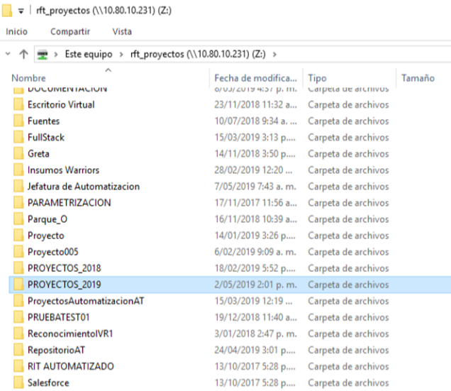
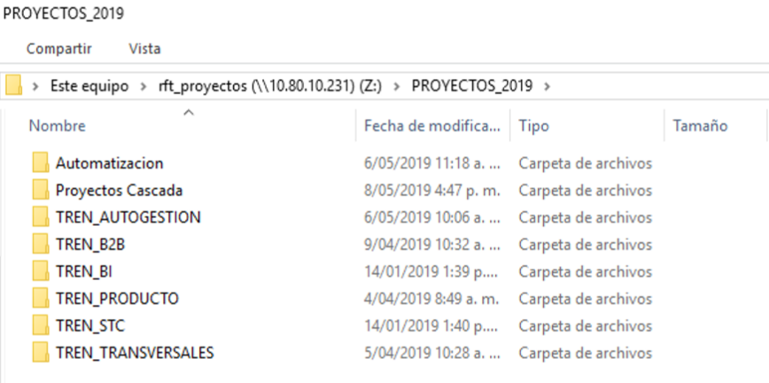
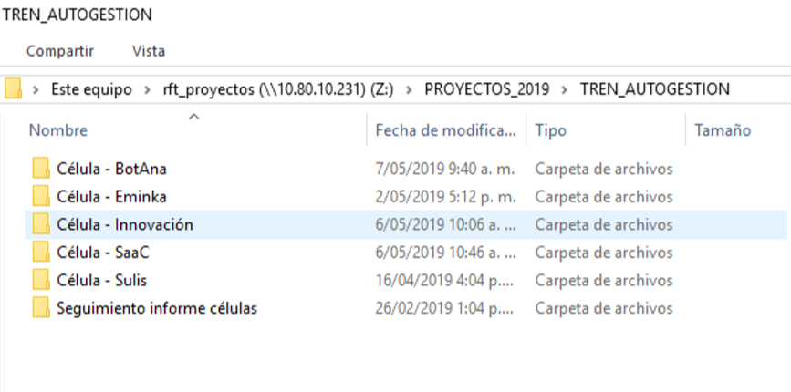
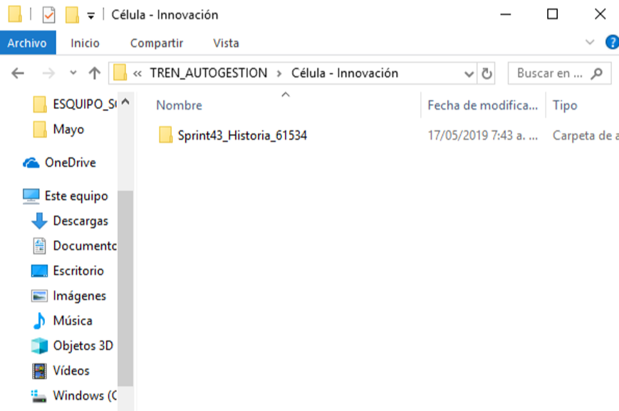

Repositorio
Ruta repositorio: \\10.80.10.231\rft_proyectos
1.En el repositorio se ingresa a la carpeta: PROYECTOS_2019.
2. Se visualizan las carpetas por Trenes:
3. Dentro de la carpeta de cada tren se encuentran las carpetas de las células que lo conforman:
Nota: Si no se encuentra creada la carpeta de tú célula, es necesario que la crees siguiendo la estructura que ya se tiene. 4. Dentro de la carpeta de la Célula se debe encontrar por HU una carpeta creada bajo la nomenclatura: Sprintxxx_HUxxxx_Descripción:
5. Dentro de la carpeta se deben tener dos carpetas creadas:
- Documentación --> Debe contener toda la documentación referente a la HU.
- Evidencias --> Debe contener las evidencias correspondientes del PDP de pruebas.